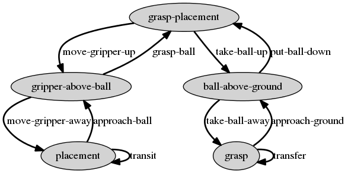

Planning and Decision
Python Implementation of RRT

Modelling the problem
In order to model properly the problem, we have implemented a graph representing all the possible states of the robots with the associated constraints and transitions. Implementing the graph
After having modeled the previous graph, we had to translate into maths using adapted frames and quaternions. Once this had been done, we could program the states and the transitions in Python.
## Create graph
graph = ConstraintGraph (robot, 'graph')
## Create constraint of relative position of the ball in the gripper when ball
## is grasped
ballInGripper = [0, .137, 0, 0.5, 0.5, -0.5, 0.5]
ps.createTransformationConstraint ('grasp', gripperName, ballName,
ballInGripper, 6*[True,])
## Create nodes and edges
# Warning the order of the nodes is important. When checking in which node
# a configuration lies, node constraints will be checked in the order of node
# creation.
graph.createNode (['grasp-placement', 'gripper-above-ball', 'placement', 'ball-above-ground', 'grasp'])
graph.createEdge ('placement', 'placement', 'transit', 1, 'placement')
graph.createEdge ('placement', 'gripper-above-ball', 'approach-ball', 1, 'placement')
graph.createEdge ('gripper-above-ball', 'placement', 'move-gripper-away', 1, 'placement')
graph.createEdge ('gripper-above-ball', 'grasp-placement', 'grasp-ball', 1, 'placement')
graph.createEdge ('grasp-placement', 'gripper-above-ball', 'move-gripper-up', 1, 'placement')
graph.createEdge ('grasp', 'grasp', 'transfer', 1, 'grasp')
graph.createEdge ('grasp-placement', 'ball-above-ground', 'take-ball-up', 1, 'grasp')
graph.createEdge ('ball-above-ground', 'grasp-placement', 'put-ball-down', 1, 'grasp')
graph.createEdge ('ball-above-ground', 'grasp', 'take-ball-away', 1, 'grasp')
graph.createEdge ('grasp', 'ball-above-ground', 'approach-ground', 1, 'grasp')
## Create transformation constraint : ball is in horizontal plane with free
## rotation around z
ps.createTransformationConstraint ('placement', '', ballName,
[0,0,0.025,0, 0, 0, 1], [False, False, True, True, True, False,])
# Create complement constraint
ps.createTransformationConstraint ('placement/complement', '', ballName,
[0,0,0.025,0, 0, 0, 1], [True, True, False, False, False, True,])
ps.createTransformationConstraint ('above-ball', gripperName, ballName,
[0, 0.237, 0, 0.5, 0.5, -0.5, 0.5], [True, True, True, True, True, True,])
ps.createTransformationConstraint ('above-ground', '', ballName,
[0,0,0.2,0, 0, 0, 1], [False, False, True, True, True, False,])
ps.createTransformationConstraint('z-only', '', gripperName,
[0,0,0.2,0,0,0,1], [True, True, False, True, True, True])
ps.setConstantRightHandSide ('placement', True)
ps.setConstantRightHandSide ('above-ball', True)
ps.setConstantRightHandSide ('above-ground', True)
ps.setConstantRightHandSide ('placement/complement', False)
ps.setConstantRightHandSide ('z-only', False)
## Set constraints of nodes and edges
graph.setConstraints (node='placement', numConstraints = ['placement'])
graph.setConstraints (node='gripper-above-ball', numConstraints = ['placement','above-ball'])
graph.setConstraints (node='grasp-placement', numConstraints = ['grasp', 'placement'])
graph.setConstraints (node='ball-above-ground', numConstraints = ['grasp', 'above-ground'])
graph.setConstraints (node='grasp', numConstraints = ['grasp'])
graph.setConstraints (edge='transit', numConstraints = ['placement/complement'])
graph.setConstraints (edge='approach-ball', numConstraints = ['placement/complement'])
graph.setConstraints (edge='move-gripper-up', numConstraints = ['placement/complement', 'z-only'])
graph.setConstraints (edge='move-gripper-away', numConstraints = ['placement/complement'])
graph.setConstraints (edge='grasp-ball', numConstraints = ['z-only'])
graph.setConstraints (edge='take-ball-up', numConstraints = ['z-only', 'grasp'])
graph.setConstraints (edge='put-ball-down', numConstraints = ['z-only', 'grasp'])
graph.setConstraints (edge='take-ball-away', numConstraints = [])
graph.setConstraints (edge='transfer', numConstraints = [])
graph.setConstraints (edge='approach-ground', numConstraints = [])
graph.setConstraints (edge='put-ball-down', numConstraints = []) Implementing RRT
The problem now being set, we had to solve it thanks to our implementation of RRT.
randomConfig = self.robot.shootRandomConfig()
# Get nearest neighbours
newConfig = [[],[]]
for i in range(2):
qNear, d = self.ps.getNearestConfig(randomConfig, i)
res, pathId, _ = self.ps.directPath(qNear, randomConfig, True)
# Compute lengths
length = self.ps.pathLength (pathId)
newConfig[i] = self.ps.configAtParam(pathId, length)
# Add configs and edges
self.ps.addConfigToRoadmap(newConfig[i])
self.ps.addEdgeToRoadmap(qNear, newConfig[i], pathId, True)
## Try connecting the latest nodes together
isValid, edgeId, _ = self.ps.directPath(newConfig[0], newConfig[1], True)
if isValid:
self.ps.addEdgeToRoadmap(newConfig[0], newConfig[1], edgeId, True) Results
As we can see on the following animation corresponding to the graph we have implemenented, the robot starts from a specified position, grasps the ball and puts it on the floor at a specific position while respecting constraints. Moreover, the RRT algortihm is based on the generation of random configurations that are adjusted to respect the constraints, this is why the motion of the robot can be eratic.
Here is another demonstration a RRT implementation: